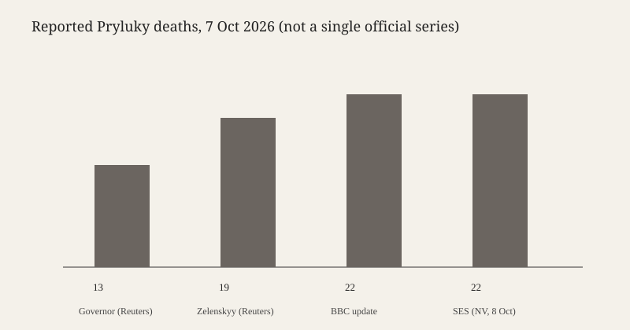

Chernihiv Oblast · Ukraine · 8 October 2026
Reported deaths in Pryluky rose from 13 to 22 as rescuers worked a five-storey block

What is agreed across desks
On 7 October 2026 Russian missiles and drones struck several parts of Ukraine. The site that produced the largest civilian death count in the wires was a five-storey residential building in Pryluky, a town in Chernihiv Oblast, north of Kyiv. Reuters, the BBC and the New Voice of Ukraine, citing the State Emergency Service, agree that a missile hit that building while people were inside, that children were among the dead, and that the count rose through the day as rescuers moved rubble. They also agree that other residential buildings, an industrial site and a youth centre were damaged, and that gas service was interrupted for part of the town.
The weapon type is not identical in every desk. The New Voice, citing local authorities, identified a Kh-101 air-launched cruise missile and said two central entrance sections were destroyed from roof to foundation. Chernihiv regional head Vyacheslav Chaus told the BBC the town was hit by five cruise missiles, one of which struck the apartment building. Reuters described a Russian missile strike on the block and, in a wider story, waves of missiles and drones. None of these accounts is a munitions laboratory report. The shared checkable claim is a missile impact on a residential block, attributed by Ukrainian officials to Russia, with a rising death toll.
Numbers diverged because they were taken at different hours. A Reuters item timed around 11:26 UTC on 7 October quoted Chaus on national television saying the Pryluky toll had risen to 13, including four children, with 50 people injured. A later Reuters story quoted President Volodymyr Zelenskyy saying 19 people died in the Pryluky attack, including five children, and that 25 people had been killed nationwide, with 100 injured. In the same piece Interior Minister Ivan Vyhivskyi put the national death toll at 28. The BBC’s updated story said 22 people, including five children, had been killed in the block, that three of the children were one-year-olds, and that more than 50 residents were wounded. On 8 October the New Voice reported the State Emergency Service figure of 22 dead, including five children, and 54 civilians injured, including seven children. Those figures are sequential reports, not four independent censuses.
What is only a quote
Zelenskyy called the barrage one of Russia’s most “vile strikes” and said the attacks coincided with Vladimir Putin’s birthday. That pairing is a presidential comment. It does not, by itself, establish why a target list was chosen. Russia, in the Reuters account, said its forces hit military-industrial sites. That is a claim about intent and about what was struck. It does not erase the photographed residential block, and it is not independently confirmed in the pieces used here. Deputy mayor Danylo Savenko’s description of running to a shelter with his wife is a witness account of the warning, not a count.
Named victims in the BBC story — one-year-olds Oleksandr, Kyrylo and Serhii, an eight-year-old Maxsym, and a boy called Sasha who died with his mother Kateryna and grandmother Viktoriia — come from Ukrainian officials. They are specific and therefore checkable in principle, but they are not repeated in the Reuters brief used here. A reader should treat the names as official identifications, not as something a wire confirmed by visiting a morgue.
Mechanism and history a reader needs
Pryluky sits on the road and rail net east of the Desna, in a region that has been struck repeatedly since the full-scale invasion began in February 2022. Chernihiv city was besieged in the first weeks of that invasion and has been hit since Russian forces withdrew from the north. A cruise missile of the Kh-101 class is launched from an aircraft, flies a long route, and is used against fixed sites. Hitting a five-storey Soviet-era block does not require a new class of weapon. It requires a guidance solution, a launch, and either an aim point on that building or a miss from a nearby aim point. Ukrainian officials describe a direct hit. Russian officials, in the wire, describe military-industrial targets. The physical result reported by rescuers is a residential collapse.
Casualty reporting in this war is an administrative process with a lag. Emergency services publish a count when a body is removed, then revise it. A president’s evening address often uses a round national total that mixes sites. A regional governor’s television interview can be hours behind the rescue log or hours ahead of a presidential video. The honest reading of 7–8 October is a band: at least 13 dead in Pryluky by late morning UTC, 19 in the presidential account, 22 in the later BBC and emergency-service accounts, with about 50 to 54 injured in the town, and a national death figure of 25 or 28 depending on the speaker. Children are in every version after the first hours.
The strike is also a U.S. policy story because Washington is a principal supplier of air defence and a party to talks about the war’s end state. Nothing in these articles says a U.S. system was or was not in Pryluky. Zelenskyy’s separate remark, carried by Reuters, that ballistic missiles remain the hardest intercept is a capability claim, not a statement that this particular round was ballistic. The BBC’s cruise-missile description and the Kh-101 identification point the other way for the apartment impact. Both can be true of a mixed barrage.
What the story is not
It is not a finished forensic account of the aim point. It is not a confirmation that the strike was timed as a birthday message. It is not a licence to treat 13, 19, 22, 25 and 28 as simultaneous facts about the same set of people. It is not a photograph of the wreck: the image on this page is a 2015 park in Chernihiv city, chosen because agency pictures of the rubble are not reusable here. The chart below plots the reported Pryluky death figures as they appeared in named outlets. It is a record of reporting, not a mortality model.

Source articles and scores
| Outlet | Headline | T | N | C |
|---|---|---|---|---|
| Reuters | At least 25 killed in Ukraine, Zelenskiy condemns one of Russia's most 'vile strikes' | 93 | 0 | 88 |
| Reuters | Death toll in Ukraine's Pryluky after Russian strike up to 13, governor says | 94 | 0 | 96 |
| BBC | Children killed while they slept as Russian missile kills 19 in block of flats | 90 | -6 | 86 |
| New Voice of Ukraine | Five children among 22 killed in Pryluky strike | 84 | -8 | 78 |
Scores are for each URL. The BBC headline on the page later read 22; the slug still carries 19. Complicity is marked down where a presidential adjective is placed in the headline as the frame, and where a Ukrainian outlet treats the Kh-101 identification as settled without an outside lab note. The early Reuters governor item is the cleanest count story.